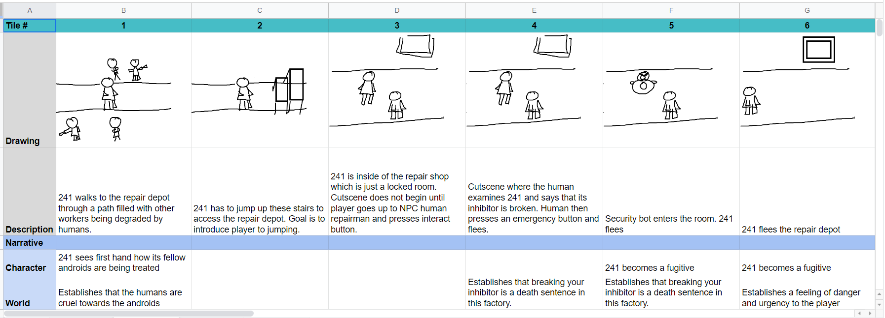
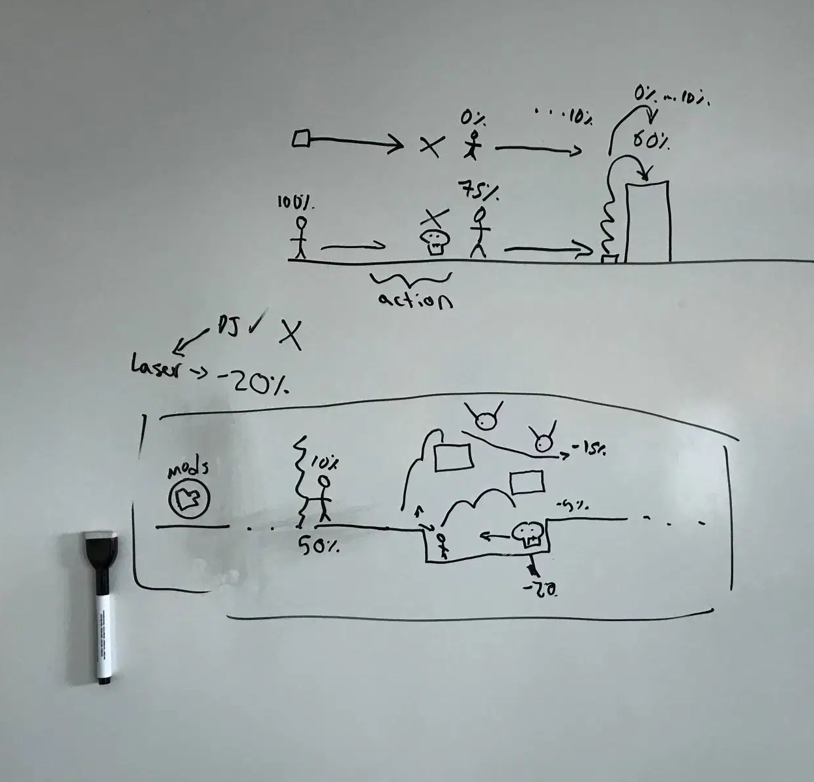

a game and graphic design project.
Description: Cyberview is an exploratory game developed by myself and my teammates Robert Michels, Carter Glass and Chris Louie. For this, my role was mainly to develop a storyline for the game, as well as create many visual pieces. I also helped to conduct user testing. To read about my role in detail, visit the blog I wrote for this project.
Ideation and Prototyping:
The Graphics:
User Testing:

Challenges:
There were many challenges with this game which I played a large role in solving, as
I worked majorly on the storyline. Many of our issues stemmed from making the game too difficult,
as it may be easy for us due to repetitive actions. However, we solved many of these issues by
identifying them through playtesting.
However, playtesting was also a challenge, as it was difficult to navigate the feedback and determine
which should be implemented and which should be put aside. Determining this is a valuable skill that I worked
hard on developing during this project.
Reflection:
There were some issues during the final playtesting
session that was preformed by industry professionals, such as pickups of items being unclear, but the game
was reportedly enjoyable, if too long to have been easily completed during the session. Upon reflection, I would have liked
to have worked more on the code if I had the chance - two of my teammates were very skilled in C# and took that
upon themselves. I would have also liked to have taken on more, if not all, of the visual design as well, time allowing.
However, I also did enjoy my roles as visual designer, content creator as well as tasks such as running user tests and ultimately I believe
Cyberview was a success.
The Final Product: This is the final trailer for our game, showing some of my work in action.